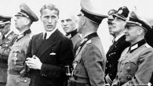
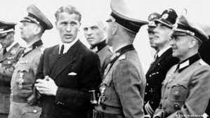

Wernher Von Braun
 

Wernher von Braun (born in Wirsitz, German Reich, on March 23rd, 1912 and died in Virginia, USA, on 16th June 1977) was a German rocket engineer and pioneer of rocket weapons and space travel. As one of the most important engineers in space history, he achieved groundbreaking successes, among other things, through the development of the liquid-fuelled rocket.
However, he had a dark past in Nazi Germany because he was significantly involved in the construction of the V2 ballistic missile and thus drove thousands of people to their deaths.
When World War II ended in 1945, the USA quickly recognized the great potential of Braun and made him work for its own rocket program.
This paid off through his great contribution to the development of the Saturn V stage rocket, which in 1969 took Apollo 11 and thus the first man to the moon.